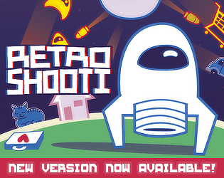

Games Catalog
-

RetroShooti
Shooti rides out on a new space adventure! Mesmerize Games proudly presents RetroShooti, a space shoot'em up by MarsCat, featuring an original chiptune soundtrack by her chiptune project Lucca! Take a trigger-happy space trip across +15 levels and face against +4 bosses on your journey, or play together with friends in the many co-operative and competitive party modes!
-

Rescue in Faraway Fields
Faraway Fields is in danger! Your friend has been kidnapped by robots and strange metal boxes are popping up through the whole forest, turning all the animals angry! You're Goph, a chummy groundhog who will find his way through rabid birds, deadly robots and perilous jumps armed with nothing but rocks.
A challenging, cute retro-styled arcade platformer with up to 12 levels and 3 difficulty levels.
-

Medic Panic!
You're Dr. Hilton, and your shift on the hospital just got crazy when Mr. Kent, a millionaire philanthropist, announces he wants to come for a visit!
Fast-paced action arcade game with 14 levels. Heal all the patients on each floor!